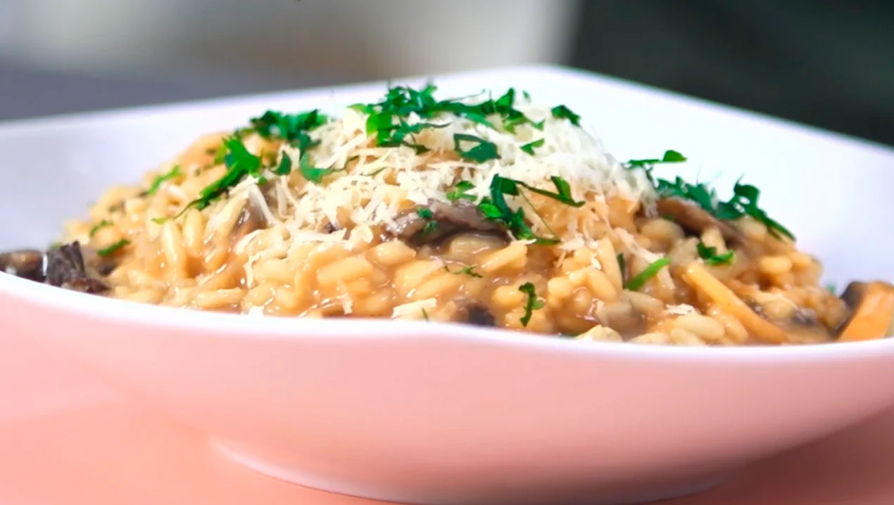

Risotto de Hongos

Ingredientes
- 150 g de arroz carnaroli.
- Un diente de ajo picado.
- Una cebolla.
- 30 cc de vino blanco.
- 100 g de champignones.
- 50 g de hongos de pino (hidratar en agua caliente 30 minutos).
- 700 cc de caldo.
- 40 g de manteca.
- 40 g de queso sardo rallado.
- Perejil picado, c/n.
- Aceite de oliva, c/n.
Procedimiento
- Hidratar los hongos de pino en agua tibia. Reservar.
- Dorar la cebolla picada con oliva y el ajo, no tiene que tomar color.
- Incorporar los hongos.
- Nacarar el arroz (rehogar el grano de arroz en materia grasa, sin dorar, se pone más brillante).
- Desglasar con vino blanco (recuperar jugos).
- Agregar caldo a medida que el arroz vaya absorbiendo.
- Cocinar de 18 a 20 minutos.
- Fuera del fuego, agregar la manteca fría y el queso.
- Revolver enérgicamente para montar el risotto.